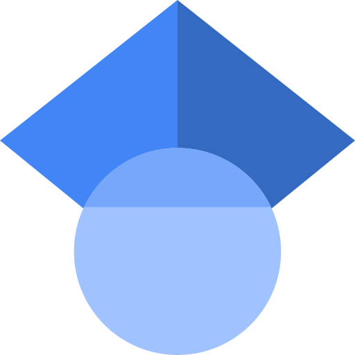
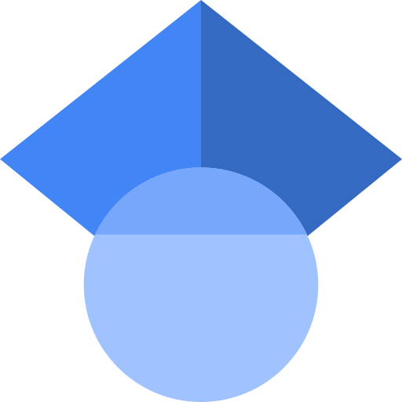

Ricardo Pereira de Magalhães Cruz
 rpcruz@fe.up.pt
3915-392E-21D4
rpcruz@fe.up.pt
3915-392E-21D4
 0000-0002-5189-6228
 pSFY_gQAAAAJ
0000-0002-5189-6228
 pSFY_gQAAAAJ
Ricardo P. M. Cruz is an Assistant Professor at the Faculty of Engineering of the University of Porto and a researcher at INESC TEC. His work focuses on machine learning, particularly deep learning, and computer vision. He received a B.Sc. degree in Computer Science (2012), an M.Sc. degree in Mathematical Engineering (2015), both from the University of Porto, and a Ph.D. degree in Computer Science (2021) jointly from the University of Porto, Aveiro and Minho. His topics cover transversal aspects of machine learning with applications to health and autonomous driving, detailed in over 20 publications with 100+ citations.
Publications
Sources for the following metrics: • Impact Factor (IF) as reported by the journal's webpage. • SJR rank quartiles are from Scimago and best quartile is chosen when multiple categories exist. • CORE rank is from ICORE for whatever last year is available for that conference. • Citation counts come from Crossref. Last update: 2025-07-30